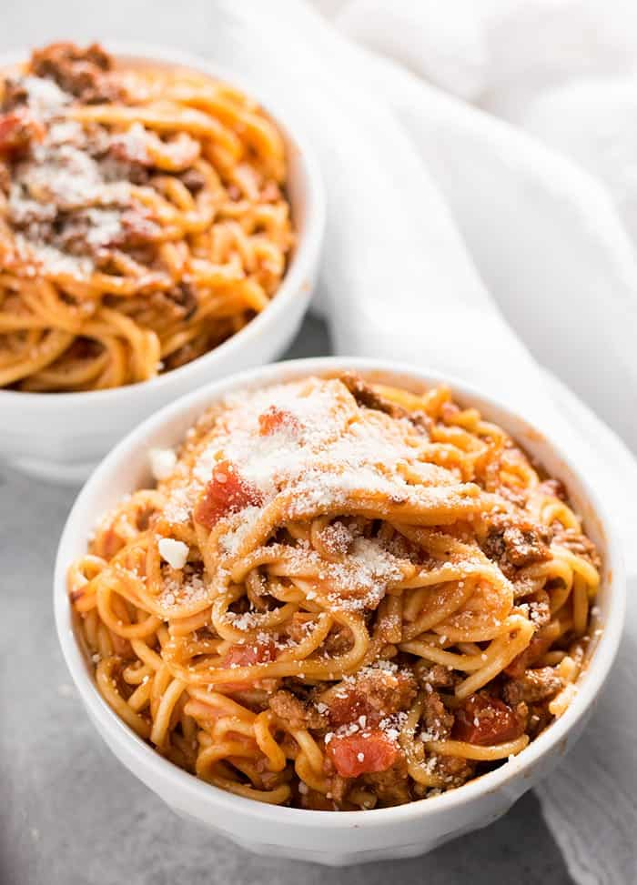

Instant Pot Spaghetti

Description
This recipe is an easy to make spaghetti recipe that
can be cooked all with the use of an Instant Pot.
Ingredients
- 1lb of lean ground beef
- 1/2 tsp salt
- 1 can (14.5 oz) tomatoes
- 1 lb spaghetti noodles
- 1 (24oz) jar spaghetti sauce
Steps
- Set Instant Pot to Saute and add ground beef and salt.
Cook and break up meat until it is completely brown. Turn instant pot off
- Break spaghetti noodles in half and palce on top of the meat.
Pour over the spaghetti sauce and diced tomatoes along with
4.5 cups of water
- Seal the instant pot and set it to manual mode, high pressure for 8 minutes/li>
- When the time is up, use the manual quick release to open the instant pot.
Stir the spaghetti well to incorporate the liquid before serving.